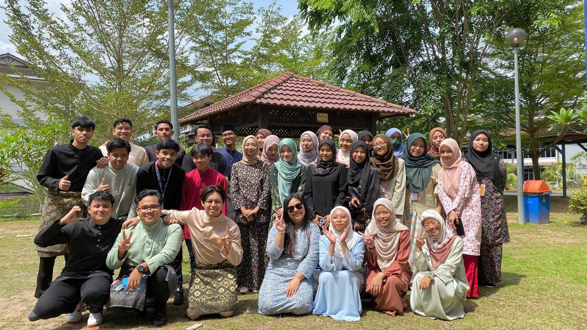
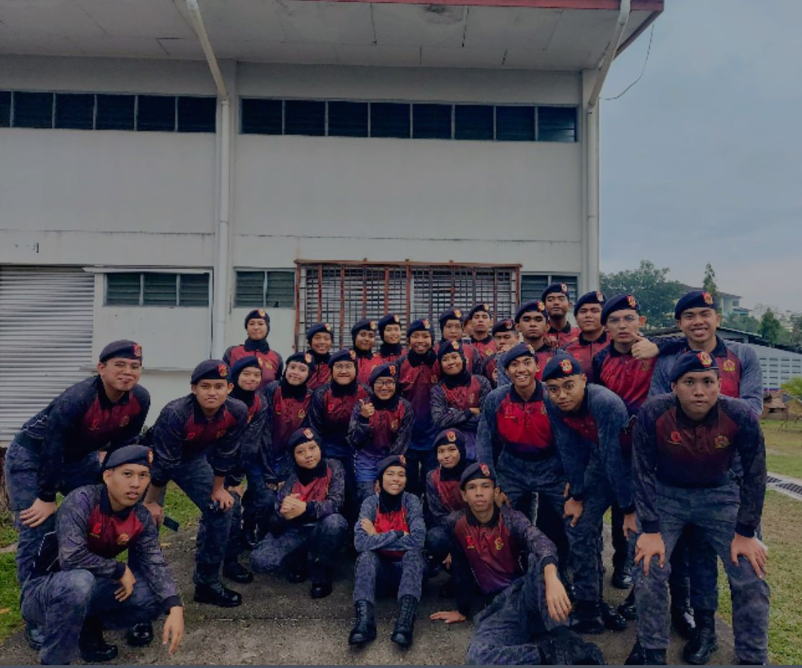
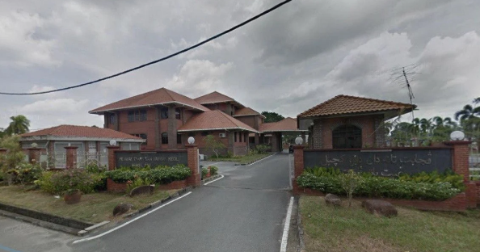
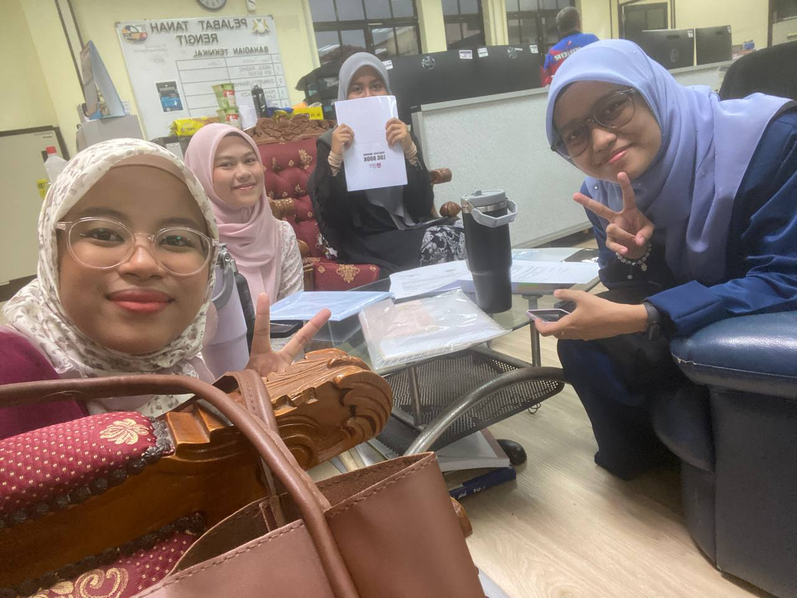
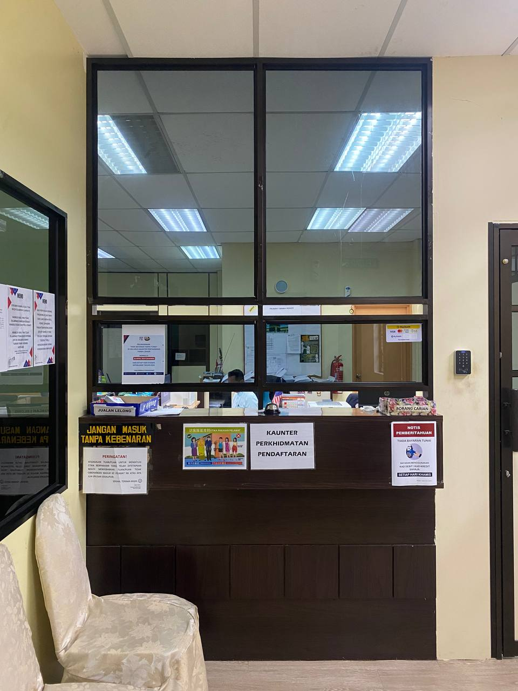
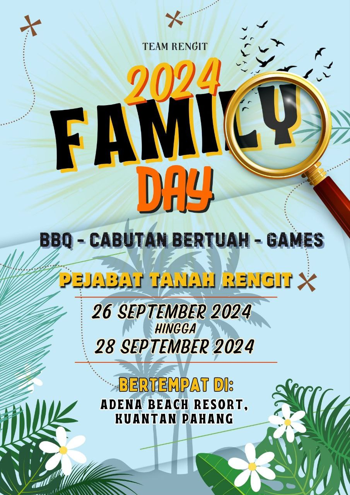
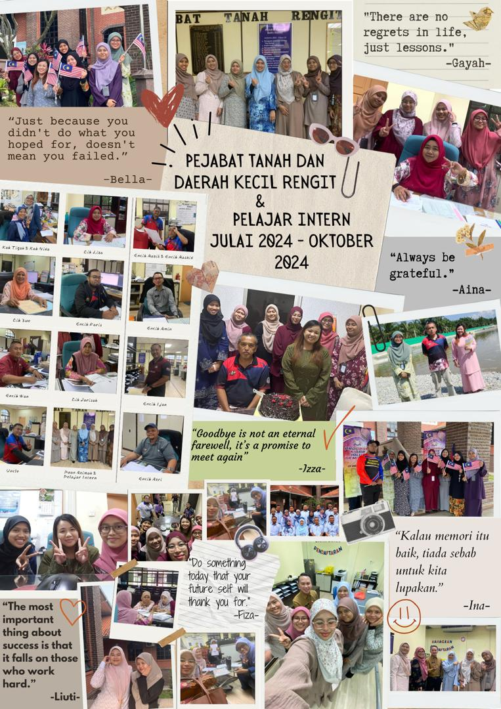
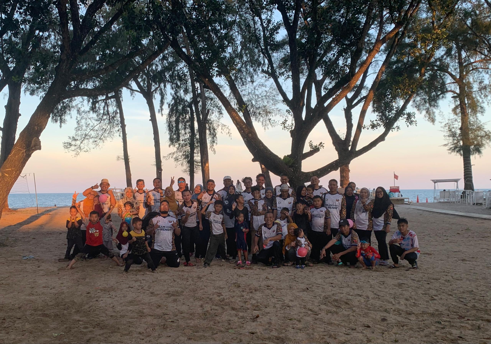

HOME PAGE
WELCOME TO MY WEBSITE >_< !!!
Hai! Thank you for visiting my website.
November, 2024.
APPRECIATION >_< !!!
Firstly, I would like to express my deepest gratitude to Allah SWT for his blessings and guidance throughout the completion of this assignment. Without his grace and guidance, I would not have been able to accomplish this work.
I would also like to extend my sincere appreciation and thanks to my lecturer, Madam Ummu Asyikin Binti Othman for her help, guidance, suggestions, and advice throughout the entire process of completing this assignment.<
Lastly, I would like to express my thanks to my beloved family and friends, who have provided continuous support and encouragement to me during this assignment. Your understanding, patience, and willingness to assist, whether directly or indirectly, have been truly appreciated.
Thank you to everyone who played a part in the accomplishment of this assignment. Your kindness and contributions will always be remembered.
ABOUT ME
Hi, I'm Ina! I love playing mobile games and enjoy outdoor activities like jogging in my free time. I'm from Batu Pahat, Johor, and I'm always up for trying new things and having fun!
Personal Information
| Name | Nur Serina Binti Salim |
| Age | 20 years old |
| Address | Batu Pahat, Johor |
| Hobbies |
|
| Favorite Foods |
|
| Favorite Drinks |
|
Education Background
- SK Seri Sinaran
- SMK Permata Jaya
- Universiti Teknologi Mara Cawangan Johor Kampus Segamat
2011-2016
2017-2021
2022-2024
Skills
Personal Skills
Teamwork
Adaptability
Time Management
Positive Attitude
Technical Skills
Computer Skills
Internet Browsing
Designing
Editing
EDUCATION JOURNEY
Primary School
I started my schooling journey back in 2010 at the preschool of SK Seri Sinaran. After that, I continued my primary school years there from 2011 to 2016. In 2016, I sat for the Ujian Penilaian Sekolah Rendah (UPSR) at the same school. Looking back, my primary school was filled with many sweet and unforgettable memories.
High School
When I entered high school, I chose to study at SMK Permata Jaya. My journey there began in 2017 and lasted until 2021. I sat for the Pentaksiran Tingkatan 3 (PT3) in 2019 and the Sijil Pelajaran Malaysia (SPM) in 2021, all at the same school. It was such an exciting time as I made new friends, learned so many new things, and participated in various activities and competitions. Those experiences gave me unforgettable memories and made my high school years so enjoyable!
University
And just like that, my school days came to an end. I moved on to university life and pursued my studies in Information Management at UiTM Segamat Campus. University brought a whole new world of experiences and learning for me. I even stepped out of my comfort zone by joining the Majlis Perwakilan Komander Kesatria (MPKK). Although there were many challenges along the way to completing my studies, I’m grateful for the opportunity to continue my education and explore so many new things.


EXPERIENCE
In this section, I’d like to share my experience during my industrial training. I had the opportunity to undergo my internship at Pejabat Tanah Dan Daerah Kecil Rengit from July 21 to September 12, 2024. Throughout my time there, I gained many new insights and valuable experiences that truly enriched my learning journey.


I was assigned to the Registration Department, where my main tasks involved assisting the staff in attending to the public at the Registration Counter of the Rengit Sub-District Land and District Office. I also had the opportunity to learn and assist with various duties carried out by the staff, such as opening files for specific matters, issuing payment receipts for service charges, and many more.

I also had the chance to learn and assist in the technical aspects of creating plans. One of my experiences included learning and using Adobe Photoshop to help insert information into plans. The task I enjoyed the most was designing, such as creating a poster design for the Family Day event for Pejabat Tanah Dan Daerah Kecil Rengit.

Throughout my industrial training here, I felt incredibly grateful because all the staff and my colleagues were kind and created a positive environment. However, I did face some challenges at times, especially when I lacked the knowledge to assist and meet the needs of the public at the registration counter. Thankfully, these issues were resolved smoothly, as the staff were always there to guide and teach me patiently. Any questions I had about my tasks were always answered with clear explanations. My supervisor was also very supportive, sharing valuable insights and knowledge that helped me grow.
I also had the chance to join the Family Day event organised by Pejabat Tanah Dan Daerah Kecil Rengit at Adena Beach Resort, and it was such an amazing experience! It became one of the sweetest memories of my internship. What made it even more special was how it strengthened the bond between me and my fellow interns we're still super close even now, despite being back at our respective universities.
I'm truly grateful to Pejabat Tanah Dan Daerah Kecil Rengit for giving me this opportunity to complete my industrial training there. They not only provided me with valuable learning experiences but also allowed me to create joyful and unforgettable memories with them.


GALLERY
IMAGEclick here
Videoclick here